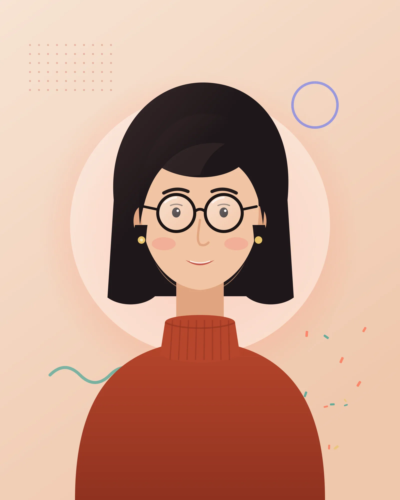

2024
为 200 万+ 企业银行客户打造的平静、一眼可读的面板。

01 — 关于
我在波尔图从平面设计起步，为了让版式动起来而学会了写代码。十一年后，我负责的是产品里最让人记住的部分：顺滑的新手引导、一目了然的数据面板，以及让品牌“活起来”的 WebGL 瞬间。
如今我以独立开发者身份，与四大洲的产品团队和工作室合作。我在意那些看不见的细节——焦点状态、减少动态效果的降级方案、中端手机上的 60 fps——因为手艺正是在这些地方变成信任。
传达设计学位、一篇关于生成式字体的毕业论文，以及第一段手写的 JavaScript 动画。
加入 Kraft & Pixel，为汽车和时尚品牌打造屡获殊荣的 WebGL 营销项目。
在伦敦 Northwind Finance 带领前端：设计系统、性能预算和一支八人团队。
在里斯本开设一人工作室，与九个国家的团队合作。
在大会演讲、写博客，并维护开源动效工具 Kinetic Type。
02 — 技能
将鼠标悬停或聚焦在任一技能上查看说明；点击词云中的词语，看看我在哪里用到它。
03 — 精选作品
客户项目、自有产品与开源工具精选。点开任一项目查看完整故事。
9 / 9
为 200 万+ 企业银行客户打造的平静、一眼可读的面板。

实时定制夹克和背包，一键完成下单。

即使没有信号，地图、笔记和照片也随时可用的 PWA。

设计令牌、60+ 无障碍组件与文档，开箱即用。

一间让观众“种出”声音与光之花园的展厅。

无论能力如何，每个人都能顺利完成的注册引导。

在交互式 WebGL 地球上呈现四十年的海表温度数据。

开源的动态字体试验场，可导出为视频或代码。

宇宙主题 WebGL 首屏、讲者 CMS 与两步购票流程。
04 — 客户评价
05 — 经历
筛选时间线，展开任一条目查看详情。
有意义的动效 — Web Motion Summit 2026
· 里斯本 LX Factory
前端开发者的 WebGL 实战工作坊
· 线上（Zoom）
Mara Ellison Studio 里斯本 · 远程
与产品团队和工作室合作，打造交互产品、WebGL 体验与设计系统。
Northwind Finance 英国伦敦
主导重建服务 200 万客户的企业银行面板。
Kraft & Pixel Studio 德国柏林
为汽车与时尚品牌打造 WebGL 营销活动与新品发布页。
Mosaic Labs 葡萄牙波尔图
为三十多家客户交付响应式网站与 Web 应用。
波尔图大学美术学院 葡萄牙波尔图
字体排印、交互与生成式设计。
Nordlys 3D 配置器 线上
因界面设计、易用性与创新获得认可。
多个客户项目 线上
在营销活动与产品网站上的创意开发获得认可。
即将举行 · 2026 年 11 月 12 日 里斯本 LX Factory
如何设计“解释而非装饰”的动效系统。
Frontend Porto 葡萄牙波尔图
面向已经会 CSS 的人的 GLSL 入门。
06 — 足迹
横跨四大洲的客户与合作。拖动地球，或点选一座城市。
里斯本大本营与工作室 · 2022 年至今
A step-by-step guide to shader-based image transitions in Three.js — texture loading, a displacement shader, GSAP timing and graceful fallbacks.
阅读文章08 — 常见问题
还有别的问题？
我制作交互式营销网站、产品界面、WebGL 体验和设计系统。合作方大多是希望作品既有手工质感、又保持快速与无障碍的产品团队、设计工作室和代理公司。
09 — 联系
告诉我你的项目、时间线和预算。每条消息我都会在两个工作日内回复。